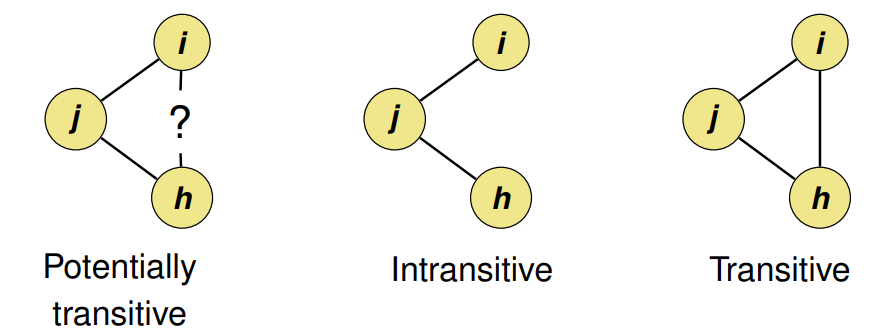
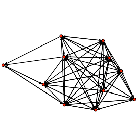
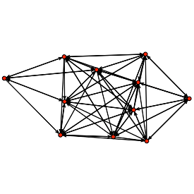
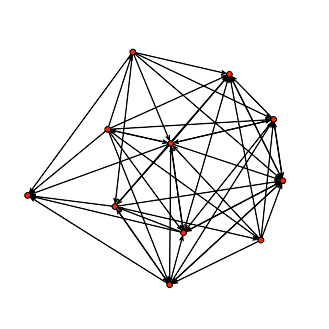
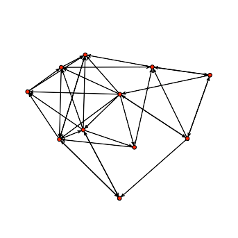

Network Analysis
Misc
- Packages
- {statnet} - statnet is a collection of software packages for statistical network analysis that are designed to work together, with a common data structure and API, to provide seamless access to a broad range of network analytic and graphical methodology.
- List of individual package tutorials
- Models fit with MCMC, so can be slow.
- {statnet} - statnet is a collection of software packages for statistical network analysis that are designed to work together, with a common data structure and API, to provide seamless access to a broad range of network analytic and graphical methodology.
- Analysis Questions
- At a given moment in time:
- Who is connected to whom? Who is not connected?
- Where, and who are the hubs?
- Where and about what are the clusters? Are there silos?
- Changes over time:
- Are new connection forming?
- Are new patterns of connectivity forming?
- How was our network before and after the introduction of an activity?
- At a given moment in time:
- Issues with Statistics
- They are unable to leverage node features at all. All nodes with the same values for these summary statistics are indistinguishable from each other.
- There is no learnable component in the production of these features. We cannot fit a custom objective or train them jointly with a downstream task.
Terms
- Centrality
- Measures, abstractly, how important a given graph is to the connectivity of the overall graph
- Higher for nodes which lie in paths that efficiently connect many nodes to each other.
- Types:
- Betweenness - Nodes with high betweenness centrality tend to be the “crossroads” between nodes, i.e. when seeking to connect with another node that isn’t immediately adjacent, it will typically involve a node with high betweeness centrality.
- These nodes are important in keeping the network connected. Likely important intermediaries or bridges
- Calculated by counting the number of shortest paths that pass through a node and dividing by the total number of shortest paths in the network.
- Closeness - Nodes with high closeness centrality have quick access to many other nodes. These nodes have the shortest distance, in network terms, to all other nodes.
- These nodes are important in spreading information to all other nodes as quickly and efficiently as possible.
- Closeness Centrality = 1 / (Sum of SPD from the node to all other nodes)
- Where SPD is the shortest path distance. In practice, this would be done with a shortest path algorithm like Breadth-First Search or Dijkstra's algorithm.
- Betweenness - Nodes with high betweenness centrality tend to be the “crossroads” between nodes, i.e. when seeking to connect with another node that isn’t immediately adjacent, it will typically involve a node with high betweeness centrality.
- Clusters
- Cluster Clique - a cluster that has at least one node that’s connected to another node outside of the cluster
- Cluster Silo - a cluster that has no node connected to any other node outside of the cluster
- Clustering coefficient
- Measures the density of a node’s local portion of the graph.
- Nodes who have neighbors that are all connected to each other will have a higher clustering coefficient
- Degeneracy - A network model is degenerate when the space that an MCMC sampler can explore is so constrained that the only way to get the observed g(y) is essentially to flicker between full and empty graphs in the right proportion.
- A good indication that you have a degenerate model is that you have NA values for standard errors on your model parameter estimates. You can’t calculate a variance – and, therefore, a standard error – if you simply flicker between full and empty graphs.
- Degree aka Degree Centrality - Total edges a given node has.
- Density - the number of edges in the observed network divided by the number of possible edges
- Edges (aka Dyads)- connection between two nodes. Depending on the type of connection, the edge can have a direction.
- Edge Bundling - visually bundle together similar edges to reduce the visual clutter within a graph
- Multiplexity - The number of connections between two nodes
- Could be represented by the thickness, darkness, etc. of an edge between 2 nodes
- Nodes that have high multiplicity with each other typically form clusters
- Random Graph - A network with n nodes where the edges between nodes occur randomly with probability P (each potential edge is one Bernoulli trial). Network density is typically used for P.
- Transitivity of a relation means that when there is a tie from i to j, and also from j to h, then there is also a tie from i to h: friends of my friends are my friends
Transitivity Index (aka Clustering Index) = # Transitive Triads / # Potentially Transitive Triads
- Has a range between 0 and 1 where 1 is a transitive graph.
- For random graphs, the expected value of the transitivity index is close to the density of the graph.
Layouts
- Spring
- Fruchterman-Reingold force-directed algorithm
- arranges the nodes so the edges have similar length and minimum crossing edges
- Fruchterman-Reingold force-directed algorithm
- Random - nodes positioned uniformly at random in the unit square
- Circular - nodes on a circle
- Bipartite - nodes in two straight lines
- Spectral - nodes positioned using the eigenvectors of the graph Laplacian
Exponential Random Graph Models (ERGM)
Analogous to logistic regression: ERGMs predict the probability that a pair of nodes in a network will have a tie between them.
Misc
- Notes from Introduction to ERGMs
- Packages
- {statnet} - See Misc >> Packages
- {ergmito} - Simulation and estimation of Exponential Random Graph Models (ERGMs) for small networks (up to 5 vertices for directed graphs and 7 for undirected networks) using exact statistics
- In the case of small networks, the calculation of the likelihood of ERGMs becomes computationally feasible, which allows us avoiding approximations and do exact calculation, ultimately obtaining MLEs directly.
- Can be used for directed, undirected, valued, unvalued, and bipartite networks.
- Fitting a model with just edges is kind of like an intercept-only regression model.
- Less informative for dense networks.
- Examples: From Introduction to ERGMs
- Dense


 - Not Dense

- Dense
- Triads aka triangles (i.e. transitive relationships) cause problems in ERGMs (more triads → denser graph). They often lead to degeneracy.
- NAs for standard error estimates are a good indication of degeneracy.
- Since ERGMs don’t handle triads well, it is NOT recommended using “triangle” as an adjustment variable in your model
- Examples: From Introduction to ERGMs
Goal: Describe the local selection forces that shape the global structure of a network
Examples of networks examined using ERGM include knowledge networks, organizational networks, colleague networks, social media networks, and networks of scientific development.
The basic principle underlying the method is comparison of an observed network to Exponential Random Graphs.
- The Null Hypothesis is a Erdos-Renyi graph
- A random graph where the degree of any node is binomially distributed (with n-1 Bernoulli trials per node, for a directed graph). (n is the number of nodes)
- The Null Hypothesis is a Erdos-Renyi graph
Equation:
\[ \text{logit}(Y_{ij} = 1 \; | \; y_{ij}^c) = \theta^T \delta (y_{ij}) \]- \(\theta\) is a vector of coefficients
- \(y_{ij}\) denotes ijth dyad in graph \(y\)
- If \(y_{ij} = 1\), then i and j are connected by an edge.
- If \(y_{ij} = 0\), then i and j are NOT connected by an edge.
- \(y_{ij}^c\) is the complement (i.e. all other pairs of vertices in \(y\) other than (i, j)).
- \(\delta(y_{ij})\) is the change statistic. A measure of how the graph statistic \(g(y)\) changes if the ijth vertex is toggled on or off.
- \(\delta(y_{ij}) = g(y_{ij}^+) - g(y_{ij}^-)\)
- \(y_{ij}^+\) is the same network as \(y\) except that \(y_{ij} = 1\).
- \(y_{ij}^-\) is the same network as \(y\) except that \(y_{ij} = 0\).
Example:{statnet} Edges model
bottmodel.01 <- ergm(bott[[4]] ~ edges) ## Evaluating log-likelihood at the estimate. summary(bottmodel.01) ## ## ========================== ## Summary of model fit ## ========================== ## ## Formula: bott[[4]] ~ edges ## ## Iterations: 4 out of 20 ## ## Monte Carlo MLE Results: ## Estimate Std. Error MCMC % p-value ## edges -0.7621 0.2047 0 0.000313 *** ## --- ## Signif. codes: 0 '***' 0.001 '**' 0.01 '*' 0.05 '.' 0.1 ' ' 1 ## ## Null Deviance: 152.5 on 110 degrees of freedom ## Residual Deviance: 137.6 on 109 degrees of freedom ## ## AIC: 139.6 BIC: 142.3 (Smaller is better.)Example:{statnet} Edges and Triads model
summary(bott[[4]]~edges+triangle) ## edges triangle ## 35 40 bottmodel.02 <- ergm(bott[[4]]~edges+triangle) summary(bottmodel.02) ## ## ========================== ## Summary of model fit ## ========================== ## ## Formula: bott[[4]] ~ edges + triangle ## ## Iterations: 2 out of 20 ## ## Monte Carlo MLE Results: ## Estimate Std. Error MCMC % p-value ## edges -0.55772 0.58201 0 0.340 ## triangle -0.05674 0.15330 0 0.712 ## ## Null Deviance: 152.5 on 110 degrees of freedom ## Residual Deviance: 137.5 on 108 degrees of freedom ## ## AIC: 141.5 BIC: 146.9 (Smaller is better.)attributes of the individuals who make up our graph vertices may affect their propensity to form (or receive) ties
test this hypothesis, we can employ nodal covariates using the nodecov() term.
bottmodel.03 <- ergm(bott[[4]]~edges+nodecov('age.month')) summary(bottmodel.03) ## ## ========================== ## Summary of model fit ## ========================== ## ## Formula: bott[[4]] ~ edges + nodecov("age.month") ## ## Iterations: 4 out of 20 ## ## Monte Carlo MLE Results: ## Estimate Std. Error MCMC % p-value ## edges -1.526483 1.335799 0 0.256 ## nodecov.age.month 0.009501 0.016352 0 0.562 ## ## Null Deviance: 152.5 on 110 degrees of freedom ## Residual Deviance: 137.3 on 108 degrees of freedom ## ## AIC: 141.3 BIC: 146.7 (Smaller is better.)- result suggests that in this dataset, the combined age of the children involved in a dyad as no effect on the probability of a tie between them, in either direction.
imitation is a directed relationship. We might expect that older children are more likely to be role models to others. To test this hypothesis, we can use the directed variants of
nodecov():nodeocov()(effect of an attribute on out-degree) andnodeicov()(effect of an attribute on in-degree). We note that thenodecov()group of terms are for numeric attributes;nodefactor()terms are available for categorical attributes.bottmodel.03b <- ergm(bott[[4]]~edges+nodeicov('age.month')) summary(bottmodel.03b) ## ## ========================== ## Summary of model fit ## ========================== ## ## Formula: bott[[4]] ~ edges + nodeicov("age.month") ## ## Iterations: 4 out of 20 ## ## Monte Carlo MLE Results: ## Estimate Std. Error MCMC % p-value ## edges -2.89853 0.96939 0 0.00345 ** ## nodeicov.age.month 0.05225 0.02272 0 0.02340 * ## --- ## Signif. codes: 0 '***' 0.001 '**' 0.01 '*' 0.05 '.' 0.1 ' ' 1 ## ## Null Deviance: 152.5 on 110 degrees of freedom ## Residual Deviance: 132.1 on 108 degrees of freedom ## ## AIC: 136.1 BIC: 141.5 (Smaller is better.)The number of other children who imitated a child increase with the child’s age
Node Embeddings
- Learnable vectors of numbers that can be mapped to each node in the graph, allowing us to learn a unique representation for each node.
- Use as features in a downstream model.
- Methods
- DeepWalk and Node2vec papers
- Use the concept of a random walk, which involves beginning at a given node and randomly traversing edges, to produce pairs of nodes that are nearby each other.
- Trained by maximizing the cosine similarity between nodes that co-occurred in random walks.
- This training objective leverages the homophily assumption, which states that nodes that are connected to each other tend to be similar to each other.
- DeepWalk and Node2vec papers
- Issues with Embeddings
- They do not use node features at all. They assume that close-by nodes are similar without actually using the node features to confirm this assumption.
- They rely on a fixed mapping from node to embedding (i.e. this is a transductive method).
- For dynamic graphs, where new nodes and edges may be added, the algorithm must be re-ran from scratch, and all node embeddings need to be recalculated. In real-world problems, this is quite a big issue, as most online platforms have new users signing up every day, and new edges being created constantly.
Graph Convolutional Networks (GCN)
- Learns representations of nodes by learning a function that aggregates a node’s neighborhood (the set of nodes connected to the original node), using both graph structure and node features.
- These representations are a function of a node’s neighborhood and are not hardcoded per node (i.e. this is an inductive method), so changes in graph structure do not require re-training the model.
- For unsupervised learning tasks, the method is similar to Node2vec/DeepWalk
- Layers
- A layer takes a weighted average of the node features in the original node’s neighborhood, and the weights are learned by training the network
- Adding layers produces aggregations that use more of the graph.
- The span of the subgraph used to produce a node’s embedding is expanded by 1 hop.